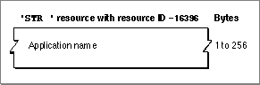

Legacy Document
Important: The information in this document is obsolete and should not be used for new development.
Important: The information in this document is obsolete and should not be used for new development.


The Missing-Application Name String
When your application creates a document that the user can open, your application should include a missing-application name string in the resource file of the document. The missing-application name string is a resource with the resource type'STR ', it must have a resource ID number of -16396, and it must be made purgeable. The string resource should contain your application's name only. See "Displaying Messages When the Finder Can't Find Your Application" beginning on page 7-25 for additional information about copying this resource into the resource fork of your documents.If you examine a compiled missing-application name string, as illustrated in Figure 7-28, you find that it consists entirely of a Pascal string that names the application that created the document. The Finder displays this string in an alert box if the user tries to open or print a document created by the application whenever the application is missing.
Figure 7-28 Structure of a compiled missing-application name string resource
